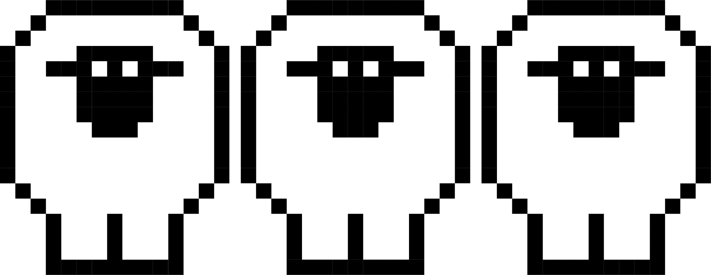

OH NO...
The ball is a few feet short of the wide open reciever and falls incomplete. Your team stares on as the clock runs out and the oposing team celebrates an undisputed victory. Your NFL dreams are crushed. You can't cope with the loss and strive for any kind of solace. You move to iceland and purchase a sheep ranch to live out the rest of your years alone dreaming about what your life could have been if that one play had gone differently.
GAME OVER.
